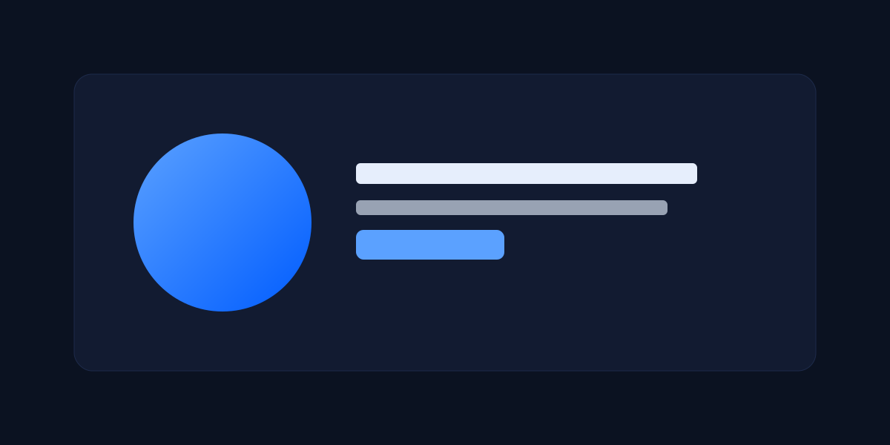

Ship a Lighthouse-ready landing with a live clarity & a11y audit HUD.
Open index.html, toggle ?audit, fix what matters. No build. Zero deps.
- ⚡
- ♿
- 🛡️
- 0️⃣
Clarity. A11y. Fold fit. In one file.
Audit HUD checks your hero word count, CTA visibility, fold fit for common viewports, focus order, motion policy, and LCP.
- Clone, open
index.html. - Add
?auditto the URL or press G. - Follow inline tips; aim for ≥95 Lighthouse and ≥90 a11y.
Start free. Keep it forever.
MIT-licensed, copy-and-ship. Works offline, on any static host.
Download ZIPFAQ
Does it need a build?
No. Open
index.html. CI uses Lighthouse for you.Is JavaScript required?
No for the page; yes for the optional Audit HUD and reveals. Without JS, content and CTA remain fully usable.
Can I track visitors?
Not by default. See the commented analytics block in the HTML for a privacy-friendly snippet.